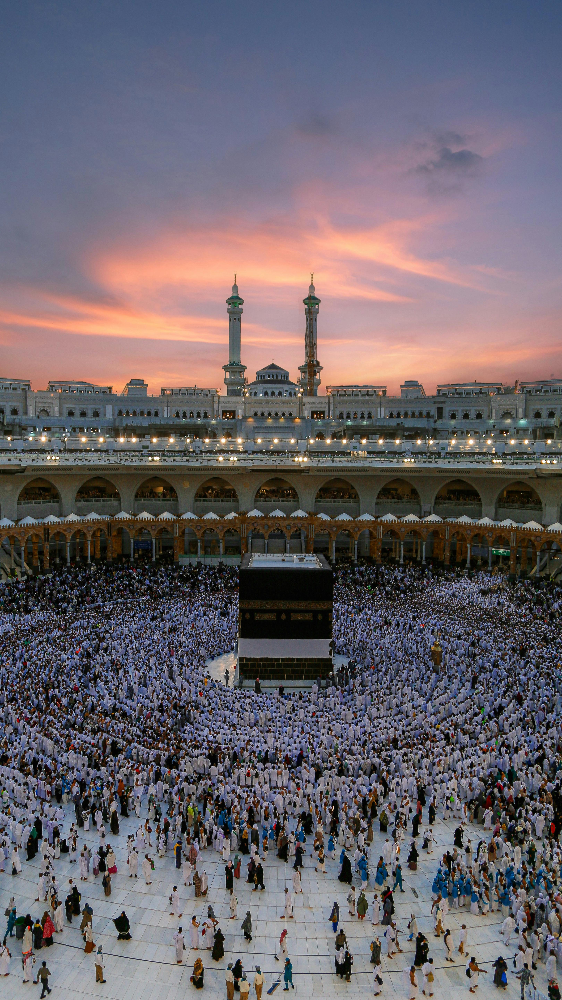

Islam is a religion of deep spirituality, unity, and history, and at the heart of its sacred geography lie three extraordinary mosques: Al-Masjid Al-Haram in Mecca, Al-Masjid An-Nabawi in Medina, and Al-Masjid Al-Aqsa in Jerusalem. These are not just places of worship; they are symbols of faith, divine connection, and the legacy of the prophets. Join us on this incredible journey as we explore the beauty, significance, and spiritual essence of these three holiest sites in Islam.

Deep in the heart of Mecca stands Al-Masjid Al-Haram, the holiest and largest mosque in the world. It is the spiritual center of Islam, drawing millions of Muslims every year who come to perform Hajj and Umrah.
At the center of Al-Masjid Al-Haram lies the Kaaba, the House of Allah. Wrapped in a black and gold silk cloth known as the Kiswah, the Kaaba represents the unity of all Muslims, as every believer, regardless of nationality or background, turns toward it in prayer. Muslims believe that the Kaaba was originally built by Prophet Ibrahim (Abraham) and his son, Prophet Ismail, as a house of monotheistic worship. Today, millions of pilgrims walk around it in an act of devotion known as Tawaf, symbolizing their submission to Allah.
Hajr-e-Aswad (The Black Stone): A revered stone embedded in the Kaaba, believed to have descended from paradise. Pilgrims strive to touch or kiss it during Tawaf. Zamzam Well: A miraculous water source, believed to have appeared when Hagar and her son, Ismail, were in desperate need. Its water is still consumed by millions of visitors. Maqam Ibrahim: A station near the Kaaba where Prophet Ibrahim stood while building the Kaaba.
It is the Qibla, the direction all Muslims face during prayer. Hajj, one of the Five Pillars of Islam, is performed here. A single prayer here is equivalent to 100,000 prayers in any other mosque. Al-Masjid Al-Haram is not just a place—it is an experience of faith, humility, and divine presence.


Traveling north to the radiant city of Medina, we arrive at Al-Masjid An-Nabawi, the second holiest mosque in Islam. This is no ordinary place—it is the mosque built by Prophet Muhammad (PBUH) himself and is home to his blessed resting place.
When Prophet Muhammad (PBUH) migrated from Mecca to Medina, he built this mosque as a center of worship, learning, and governance. It became a sanctuary where Muslims gathered to strengthen their faith and community.
The Green Dome: The most iconic part of the mosque, under which lies the tomb of the Prophet Muhammad (PBUH), alongside his closest companions, Abu Bakr and Umar. Rawdah (The Garden of Paradise): A sacred area between the Prophet’s house and his pulpit. The Prophet (PBUH) said, "What lies between my house and my pulpit is one of the gardens of Paradise." Praying here is a moment of immense spiritual blessing. Expansions Through Time: Over the centuries, Islamic rulers have expanded the mosque to accommodate millions of visitors. Today, it shines as a masterpiece of Islamic architecture and devotion.
A prayer in this mosque is equal to 1,000 prayers in any other mosque, except Al-Masjid Al-Haram. It was the center of Islamic teachings and leadership during the Prophet’s time. It remains a place of peace, reflection, and deep connection with the Prophet’s legacy. Visiting Medina and praying in this sacred mosque is a dream for every Muslim. The city carries an air of tranquility, and the call to prayer here feels like an invitation to the heart of Islam.
Far from Mecca and Medina, in the heart of Jerusalem, stands Al-Masjid Al-Aqsa, a mosque rich in history and spirituality. It is the third holiest site in Islam and a place where the heavens and the earth seem to meet.
It was from Al-Masjid Al-Aqsa that Prophet Muhammad (PBUH) ascended to the heavens on the miraculous Night Journey (Isra and Mi'raj). The Quran mentions this sacred journey in Surah Al-Isra (17:1), describing how the Prophet was taken from Mecca to this holy site and then ascended through the heavens.
The Dome of the Rock: With its magnificent golden dome, this shrine marks the spot where Prophet Muhammad (PBUH) is believed to have ascended to the heavens. Al-Qibli Mosque: The main prayer hall of Al-Masjid Al-Aqsa, known for its silver dome and historic significance. First Qibla of Islam: Before Muslims turned to the Kaaba for prayer, they faced this mosque, making it a place of deep historical importance.
A prayer here is equivalent to 500 prayers in any other mosque, except Al-Masjid Al-Haram and Al-Masjid An-Nabawi. It is one of the oldest places of worship in Islam, visited by prophets throughout history. It remains a symbol of faith, perseverance, and the rich Islamic heritage. Al-Masjid Al-Aqsa continues to inspire Muslims around the world. It is a place of devotion, history, and an unbreakable spiritual bond.
These three sacred mosques—Al-Masjid Al-Haram, Al-Masjid An-Nabawi, and Al-Masjid Al-Aqsa—are more than just structures; they are the heartbeat of Islamic faith and history. Each carries a unique story, yet all three unite the hearts of over a billion Muslims worldwide. To visit them is to walk in the footsteps of prophets. To pray in them is to feel the presence of centuries of devotion. And to learn about them is to strengthen one’s faith and connection to Allah. May every believer have the opportunity to experience the beauty of these sacred places, to seek forgiveness, and to deepen their faith.